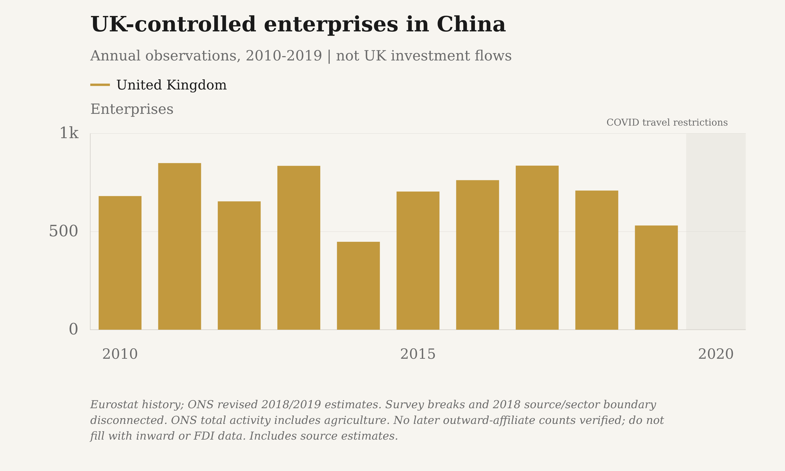
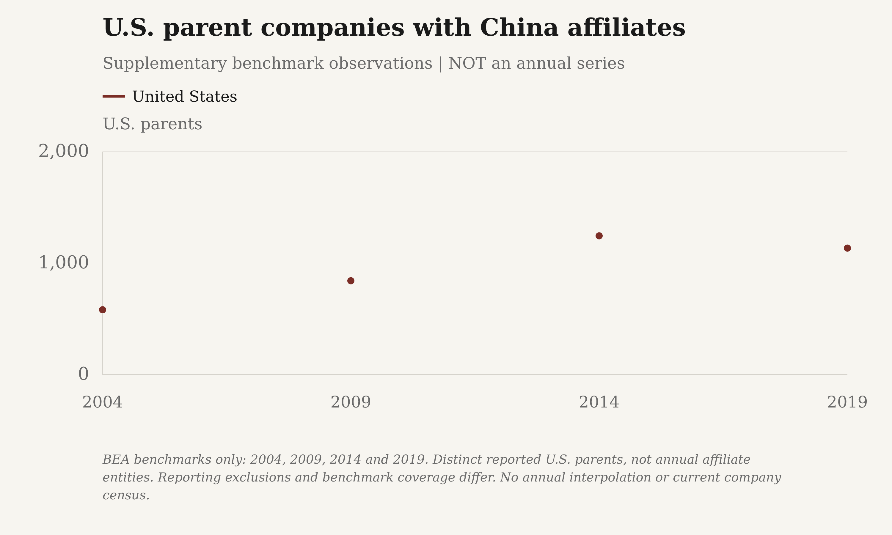

U.S.-parent affiliates in China

BEA. Nonbank coverage before 2009; reporting cutoffs $7m through 2003, $10m in 2004-08, $25m from 2009. Benchmark boundaries disconnected. Entity counts include holding companies, not all firms or offices.
Download reported values as a high-resolution PNG or editable SVG:
- The Margin of Error: PNG (3000 × 1800) · SVG
- Substack: PNG (3000 × 1800) · SVG


Exact reported and plotted values
| Series | Year / ending year | Reported count | Affiliates | Status | Source vintage |
|---|---|---|---|---|---|
| United States | 2000 | 458 | 458.0000 | observed | Revised 2000 operations; historical benchmark regime |
| United States | 2001 | 492 | 492.0000 | observed | Revised 2001 operations; historical benchmark regime |
| United States | 2002 | 509 | 509.0000 | observed | Revised 2002 operations; historical benchmark regime |
| United States | 2003 | 510 | 510.0000 | observed | Revised 2003 operations; historical benchmark regime |
| United States | 2004 | 652 | 652.0000 | observed | Revised 2004 operations; historical benchmark regime |
| United States | 2005 | 692 | 692.0000 | observed | Revised 2005 operations; historical benchmark regime |
| United States | 2006 | 762 | 762.0000 | observed | Revised 2006 operations; historical benchmark regime |
| United States | 2007 | 832 | 832.0000 | observed | Revised 2007 operations; historical benchmark regime |
| United States | 2008 | 845 | 845.0000 | observed | Revised 2008 operations; historical benchmark regime |
| United States | 2009 | 1,016 | 1,016.0000 | observed | 2009-2023 selected-data workbook; 2009 fiscal year |
| United States | 2010 | 1,052 | 1,052.0000 | observed | 2009-2023 selected-data workbook; 2010 fiscal year |
| United States | 2011 | 1,091 | 1,091.0000 | observed | 2009-2023 selected-data workbook; 2011 fiscal year |
| United States | 2012 | 1,124 | 1,124.0000 | observed | 2009-2023 selected-data workbook; 2012 fiscal year |
| United States | 2013 | 1,161 | 1,161.0000 | observed | 2009-2023 selected-data workbook; 2013 fiscal year |
| United States | 2014 | 1,561 | 1,561.0000 | observed | 2009-2023 selected-data workbook; 2014 fiscal year |
| United States | 2015 | 1,610 | 1,610.0000 | observed | 2009-2023 selected-data workbook; 2015 fiscal year |
| United States | 2016 | 1,665 | 1,665.0000 | observed | 2009-2023 selected-data workbook; 2016 fiscal year |
| United States | 2017 | 1,720 | 1,720.0000 | observed | 2009-2023 selected-data workbook; 2017 fiscal year |
| United States | 2018 | 1,737 | 1,737.0000 | observed | 2009-2023 selected-data workbook; 2018 fiscal year |
| United States | 2019 | 1,939 | 1,939.0000 | observed | 2009-2023 selected-data workbook; 2019 fiscal year |
| United States | 2020 | 1,917 | 1,917.0000 | observed | 2009-2023 selected-data workbook; 2020 fiscal year |
| United States | 2021 | 1,942 | 1,942.0000 | observed | 2009-2023 selected-data workbook; 2021 fiscal year |
| United States | 2022 | 1,934 | 1,934.0000 | observed | 2009-2023 selected-data workbook; 2022 fiscal year |
| United States | 2023 | 1,950 | 1,950.0000 | provisional | 2009-2023 selected-data workbook; 2023 fiscal year |
EU-reporting groups in China

Eurostat. EU27 2023 is confidential; 2022 is the latest disclosed value. Historical EU27 includes UK, excludes Croatia; current EU27 reverses those members. Membership, NACE and 2021 method breaks stay disconnected. Not matched to BEA coverage.
Download reported values as a high-resolution PNG or editable SVG:
- The Margin of Error: PNG (3000 × 1800) · SVG
- Substack: PNG (3000 × 1800) · SVG


Exact reported and plotted values
| Series | Year / ending year | Reported count | Enterprises | Status | Source vintage |
|---|---|---|---|---|---|
| EU27 (2007 members) | 2009 | 5,688 | 5,688.0000 | observed | Outward FATS - main variables (2007-2009); updated 2024-04-25T11:00:00+0200 |
| EU27 (2007 members) | 2011 | 6,607 | 6,607.0000 | observed | Outward FATS, main variables - NACE Rev. 2 activity (2010-2020); updated 2024-04-25T11:00:00+0200 |
| EU27 (2007 members) | 2012 | 6,860 | 6,860.0000 | observed | Outward FATS, main variables - NACE Rev. 2 activity (2010-2020); updated 2024-04-25T11:00:00+0200 |
| EU27 (current members) | 2014 | 6,746 | 6,746.0000 | observed | Outward FATS, main variables - NACE Rev. 2 activity (2010-2020); updated 2024-04-25T11:00:00+0200 |
| EU27 (current members) | 2015 | 6,731 | 6,731.0000 | observed | Outward FATS, main variables - NACE Rev. 2 activity (2010-2020); updated 2024-04-25T11:00:00+0200 |
| EU27 (current members) | 2016 | 7,301 | 7,301.0000 | observed | Outward FATS, main variables - NACE Rev. 2 activity (2010-2020); updated 2024-04-25T11:00:00+0200 |
| EU27 (current members) | 2017 | 7,234 | 7,234.0000 | observed | Outward FATS, main variables - NACE Rev. 2 activity (2010-2020); updated 2024-04-25T11:00:00+0200 |
| EU27 (current members) | 2018 | 7,312 | 7,312.0000 | observed | Outward FATS, main variables - NACE Rev. 2 activity (2010-2020); updated 2024-04-25T11:00:00+0200 |
| EU27 (current members) | 2019 | 7,577 | 7,577.0000 | observed | Outward FATS, main variables - NACE Rev. 2 activity (2010-2020); updated 2024-04-25T11:00:00+0200 |
| EU27 (current members) | 2020 | 7,528 | 7,528.0000 | observed | Outward FATS, main variables - NACE Rev. 2 activity (2010-2020); updated 2024-04-25T11:00:00+0200 |
| EU27 (current members) | 2021 | 6,900 | 6,900.0000 | estimated | Foreign affiliates of the EU enterprises by detailed breakdown of country of the affiliates (from 2021 onwards); updated 2026-03-31T23:00:00+0200 |
| EU27 (current members) | 2022 | 7,191 | 7,191.0000 | observed | Foreign affiliates of the EU enterprises by detailed breakdown of country of the affiliates (from 2021 onwards); updated 2026-03-31T23:00:00+0200 |
UK-controlled enterprises in China

Eurostat history; ONS revised 2018/2019 estimates. Survey breaks and 2018 source/sector boundary disconnected. ONS total activity includes agriculture. No later outward-affiliate counts verified; do not fill with inward or FDI data.
Download reported values as a high-resolution PNG or editable SVG:
- The Margin of Error: PNG (3000 × 1800) · SVG
- Substack: PNG (3000 × 1800) · SVG


Exact reported and plotted values
| Series | Year / ending year | Reported count | Enterprises | Status | Source vintage |
|---|---|---|---|---|---|
| United Kingdom | 2010 | 681 | 681.0000 | observed | Outward FATS, main variables - NACE Rev. 2 activity (2010-2020); updated 2024-04-25T11:00:00+0200 |
| United Kingdom | 2011 | 849 | 849.0000 | observed | Outward FATS, main variables - NACE Rev. 2 activity (2010-2020); updated 2024-04-25T11:00:00+0200 |
| United Kingdom | 2012 | 654 | 654.0000 | observed | Outward FATS, main variables - NACE Rev. 2 activity (2010-2020); updated 2024-04-25T11:00:00+0200 |
| United Kingdom | 2013 | 835 | 835.0000 | observed | Outward FATS, main variables - NACE Rev. 2 activity (2010-2020); updated 2024-04-25T11:00:00+0200 |
| United Kingdom | 2014 | 448 | 448.0000 | observed | Outward FATS, main variables - NACE Rev. 2 activity (2010-2020); updated 2024-04-25T11:00:00+0200 |
| United Kingdom | 2015 | 704 | 704.0000 | observed | Outward FATS, main variables - NACE Rev. 2 activity (2010-2020); updated 2024-04-25T11:00:00+0200 |
| United Kingdom | 2016 | 762 | 762.0000 | observed | Outward FATS, main variables - NACE Rev. 2 activity (2010-2020); updated 2024-04-25T11:00:00+0200 |
| United Kingdom | 2017 | 836 | 836.0000 | observed | Outward FATS, main variables - NACE Rev. 2 activity (2010-2020); updated 2024-04-25T11:00:00+0200 |
| United Kingdom | 2018 | 709 | 709.0000 | estimated | 2018 revised and 2019 estimates; released May 20, 2022 |
| United Kingdom | 2019 | 531 | 531.0000 | estimated | 2018 revised and 2019 estimates; released May 20, 2022 |
Norwegian-controlled enterprises in China

Statistics Norway, all industries. Direct or indirect Norwegian control; Hong Kong and Macao reported separately. This full source history replaces the narrower Eurostat view, not just its last year. Norway is outside the EU; counts are enterprises, not Norwegian parents or office locations.
Download reported values as a high-resolution PNG or editable SVG:
- The Margin of Error: PNG (3000 × 1800) · SVG
- Substack: PNG (3000 × 1800) · SVG


Exact reported and plotted values
| Series | Year / ending year | Reported count | Enterprises | Status | Source vintage |
|---|---|---|---|---|---|
| Norway | 2008 | 46 | 46.0000 | observed | Table 09827; updated 2025-12-17T07:00:00Z |
| Norway | 2009 | 57 | 57.0000 | observed | Table 09827; updated 2025-12-17T07:00:00Z |
| Norway | 2010 | 76 | 76.0000 | observed | Table 09827; updated 2025-12-17T07:00:00Z |
| Norway | 2011 | 77 | 77.0000 | observed | Table 09827; updated 2025-12-17T07:00:00Z |
| Norway | 2012 | 103 | 103.0000 | observed | Table 09827; updated 2025-12-17T07:00:00Z |
| Norway | 2013 | 115 | 115.0000 | observed | Table 09827; updated 2025-12-17T07:00:00Z |
| Norway | 2014 | 109 | 109.0000 | observed | Table 09827; updated 2025-12-17T07:00:00Z |
| Norway | 2015 | 126 | 126.0000 | observed | Table 09827; updated 2025-12-17T07:00:00Z |
| Norway | 2016 | 123 | 123.0000 | observed | Table 09827; updated 2025-12-17T07:00:00Z |
| Norway | 2017 | 110 | 110.0000 | observed | Table 09827; updated 2025-12-17T07:00:00Z |
| Norway | 2018 | 104 | 104.0000 | observed | Table 09827; updated 2025-12-17T07:00:00Z |
| Norway | 2019 | 97 | 97.0000 | observed | Table 09827; updated 2025-12-17T07:00:00Z |
| Norway | 2020 | 93 | 93.0000 | observed | Table 09827; updated 2025-12-17T07:00:00Z |
| Norway | 2021 | 91 | 91.0000 | observed | Table 09827; updated 2025-12-17T07:00:00Z |
| Norway | 2022 | 92 | 92.0000 | observed | Table 09827; updated 2025-12-17T07:00:00Z |
| Norway | 2023 | 89 | 89.0000 | observed | Table 09827; updated 2025-12-17T07:00:00Z |
| Norway | 2024 | 80 | 80.0000 | observed | Table 09827; updated 2025-12-17T07:00:00Z |
German-controlled enterprises in China

Eurostat and Bundesbank report separate histories; overlapping values differ. Eurostat's 2021 methodology change breaks the line. Bundesbank: German majority control, assets above EUR 3m; includes branches. Hong Kong and Macau are separate. Germany is already included in EU27.
Download reported values as a high-resolution PNG or editable SVG:
- The Margin of Error: PNG (3000 × 1800) · SVG
- Substack: PNG (3000 × 1800) · SVG


Exact reported and plotted values
| Series | Year / ending year | Reported count | Enterprises | Status | Source vintage |
|---|---|---|---|---|---|
| Germany (Eurostat) | 2010 | 1,137 | 1,137.0000 | observed | fats_out2_r2; Germany reporting country |
| Germany (Eurostat) | 2011 | 1,275 | 1,275.0000 | observed | fats_out2_r2; Germany reporting country |
| Germany (Eurostat) | 2012 | 1,363 | 1,363.0000 | observed | fats_out2_r2; Germany reporting country |
| Germany (Eurostat) | 2013 | 1,437 | 1,437.0000 | observed | fats_out2_r2; Germany reporting country |
| Germany (Eurostat) | 2014 | 1,547 | 1,547.0000 | observed | fats_out2_r2; Germany reporting country |
| Germany (Eurostat) | 2015 | 1,646 | 1,646.0000 | observed | fats_out2_r2; Germany reporting country |
| Germany (Eurostat) | 2016 | 1,688 | 1,688.0000 | observed | fats_out2_r2; Germany reporting country |
| Germany (Eurostat) | 2017 | 1,735 | 1,735.0000 | observed | fats_out2_r2; Germany reporting country |
| Germany (Eurostat) | 2018 | 1,743 | 1,743.0000 | observed | fats_out2_r2; Germany reporting country |
| Germany (Eurostat) | 2019 | 1,807 | 1,807.0000 | observed | fats_out2_r2; Germany reporting country |
| Germany (Eurostat) | 2020 | 1,793 | 1,793.0000 | observed | fats_out2_r2; Germany reporting country |
| Germany (Eurostat) | 2021 | 1,850 | 1,850.0000 | observed | fats_out_part; Germany reporting country |
| Germany (Eurostat) | 2022 | 1,951 | 1,951.0000 | observed | fats_out_part; Germany reporting country |
| Germany (Eurostat) | 2023 | 1,921 | 1,921.0000 | observed | fats_out_part; Germany reporting country |
| Germany (Bundesbank) | 2021 | 1,839 | 1,839.0000 | observed | Outward FATS workbook; reference years 2021-2024 |
| Germany (Bundesbank) | 2022 | 1,944 | 1,944.0000 | observed | Outward FATS workbook; reference years 2021-2024 |
| Germany (Bundesbank) | 2023 | 1,929 | 1,929.0000 | observed | Outward FATS workbook; reference years 2021-2024 |
| Germany (Bundesbank) | 2024 | 1,911 | 1,911.0000 | provisional | Outward FATS workbook; reference years 2021-2024 |
Every reported year in China
Not just endpoints: every available annual count is shown below. Columns have different ownership, reporting and sector coverage; they are not a matched ranking or an all-Europe total. The historical EU group already includes the UK: overlapping columns must not be added.
| Year / ending year | U.S. affiliates | EU27 current members | EU27 2007 members | UK enterprises | Norwegian enterprises (all industries) | Germany (Eurostat) | Germany (Bundesbank; assets above EUR 3m) |
|---|---|---|---|---|---|---|---|
| 2000 | 458 | Not reported | Not reported | Not reported | Not reported | Not reported | Not reported |
| 2001 | 492 | Not reported | Not reported | Not reported | Not reported | Not reported | Not reported |
| 2002 | 509 | Not reported | Not reported | Not reported | Not reported | Not reported | Not reported |
| 2003 | 510 | Not reported | Not reported | Not reported | Not reported | Not reported | Not reported |
| 2004 | 652 | Not reported | Not reported | Not reported | Not reported | Not reported | Not reported |
| 2005 | 692 | Not reported | Not reported | Not reported | Not reported | Not reported | Not reported |
| 2006 | 762 | Not reported | Not reported | Not reported | Not reported | Not reported | Not reported |
| 2007 | 832 | Not reported | Not reported | Not reported | Not reported | Not reported | Not reported |
| 2008 | 845 | Not reported | Not reported | Not reported | 46 | Not reported | Not reported |
| 2009 | 1,016 | Not reported | 5,688 | Not reported | 57 | Not reported | Not reported |
| 2010 | 1,052 | Not reported | Confidential | 681 | 76 | 1,137 | Not reported |
| 2011 | 1,091 | Not reported | 6,607 | 849 | 77 | 1,275 | Not reported |
| 2012 | 1,124 | Not reported | 6,860 | 654 | 103 | 1,363 | Not reported |
| 2013 | 1,161 | Confidential | Confidential | 835 | 115 | 1,437 | Not reported |
| 2014 | 1,561 | 6,746 | Not reported | 448 | 109 | 1,547 | Not reported |
| 2015 | 1,610 | 6,731 | Not reported | 704 | 126 | 1,646 | Not reported |
| 2016 | 1,665 | 7,301 | Not reported | 762 | 123 | 1,688 | Not reported |
| 2017 | 1,720 | 7,234 | Not reported | 836 | 110 | 1,735 | Not reported |
| 2018 | 1,737 | 7,312 | Not reported | 709 (estimated) | 104 | 1,743 | Not reported |
| 2019 | 1,939 | 7,577 | Not reported | 531 (estimated) | 97 | 1,807 | Not reported |
| 2020 | 1,917 | 7,528 | Not reported | Not reported | 93 | 1,793 | Not reported |
| 2021 | 1,942 | 6,900 (estimated) | Not reported | Not reported | 91 | 1,850 | 1,839 |
| 2022 | 1,934 | 7,191 | Not reported | Not reported | 92 | 1,951 | 1,944 |
| 2023 | 1,950 (provisional) | Confidential | Not reported | Not reported | 89 | 1,921 | 1,929 |
| 2024 | Not reported | Not reported | Not reported | Not reported | 80 | Not reported | 1,911 (provisional) |
Supplementary company-count benchmarks — not an annual series
These four isolated U.S. parent-company observations are background only. They are not substituted for the annual affiliate histories above, interpolated or presented as a current census.
U.S. parent companies with China affiliates

BEA benchmarks only: 2004, 2009, 2014 and 2019. Distinct reported U.S. parents, not annual affiliate entities. Reporting exclusions and benchmark coverage differ. No annual interpolation or current company census.
Download reported values as a high-resolution PNG or editable SVG:
- The Margin of Error: PNG (3000 × 1800) · SVG
- Substack: PNG (3000 × 1800) · SVG


Exact reported and plotted values
| Series | Year / ending year | Reported count | U.S. parents | Status | Source vintage |
|---|---|---|---|---|---|
| United States | 2004 | 581 | 581.0000 | observed | Revised 2004 benchmark |
| United States | 2009 | 841 | 841.0000 | observed | Revised 2009 benchmark |
| United States | 2014 | 1,244 | 1,244.0000 | observed | Revised 2014 benchmark |
| United States | 2019 | 1,134 | 1,134.0000 | observed | Revised 2019 benchmark |
Coverage and unresolved counts
As checked October 22, 2026, BEA's latest activity release covers 2023. The published schedule puts the 2024 activity release on November 20, 2026; no 2024 value is inferred.
Missing and confidential values stay blank, not zero or invented annual estimates. Membership, sector, source, survey and reporting-threshold breaks remain disconnected. Colors identify investor origins consistently across these China-hosted charts.
| Indicator | Status | Definition |
|---|---|---|
| bea affiliates:china | annual | Verified values: 2000, 2001, 2002, 2003, 2004, 2005, 2006, 2007, 2008, 2009, 2010, 2011, 2012, 2013, 2014, 2015, 2016, 2017, 2018, 2019, 2020, 2021, 2022, 2023. All series concern businesses in China; definitions and gaps are retained. |
| bea parents:china | benchmark_only | Verified values: 2004, 2009, 2014, 2019. All series concern businesses in China; definitions and gaps are retained. |
| eurostat affiliates:china | annual | Verified values: 2014, 2015, 2016, 2017, 2018, 2019, 2020, 2021, 2022. Confidential: 2013, 2023. All series concern businesses in China; definitions and gaps are retained. |
| eurostat historical eu:china | annual | Verified values: 2009, 2011, 2012. Confidential: 2010, 2013. All series concern businesses in China; definitions and gaps are retained. |
| eurostat uk:china | annual | Verified values: 2010, 2011, 2012, 2013, 2014, 2015, 2016, 2017, 2018, 2019. All series concern businesses in China; definitions and gaps are retained. |
| eurostat norway:china | annual | Verified values: 2010, 2011, 2012, 2013, 2014, 2015, 2016, 2017, 2018, 2019, 2020, 2021, 2022, 2023. All series concern businesses in China; definitions and gaps are retained. |
| ssb norway:china | annual | Statistics Norway all-industry country history; the narrower Eurostat history remains separate. |
| bundesbank germany:china | annual | German-controlled China enterprises; Eurostat and Bundesbank source histories stay separate because overlapping counts differ. Not added to EU27 or relabelled parent companies. |
| eurostat germany:china | annual | German-controlled China enterprises; Eurostat and Bundesbank source histories stay separate because overlapping counts differ. Not added to EU27 or relabelled parent companies. |
Primary sources
Publish aggregate statistics and original charts only; raw workbooks and reports remain local. Sources and retrieval checksums accompany every observation.
Sources, vintages and checksums
- U.S. Bureau of Economic Analysis - Revised 2000 operations; historical benchmark regime. Table III.A1, Number of affiliates; Tab3A1a.xls, Tab3A1b.xls, Tab3A1c.xls. Majority-owned nonbank affiliates; benchmark-exempt entities excluded. Not comparable across the 2004 reporting-regime or 2009 banking/threshold changes.
- Primary source; retrieved 2026-10-22T17:18:15+00:00; SHA-256
b0f6941375b2835a1118c45b656c3077ce2079e3ff64dddd9a2449c1c530dd87
- Primary source; retrieved 2026-10-22T17:18:15+00:00; SHA-256
- U.S. Bureau of Economic Analysis - Revised 2001 operations; historical benchmark regime. Table III.A1, Number of affiliates; Tab3A1a.xls, Tab3A1b.xls, Tab3A1c.xls. Majority-owned nonbank affiliates; benchmark-exempt entities excluded. Not comparable across the 2004 reporting-regime or 2009 banking/threshold changes.
- Primary source; retrieved 2026-10-22T17:31:29+00:00; SHA-256
998bf6a7bea11a24a16922a7cf7976c268bae865d58732540faf561a2d66cb60
- Primary source; retrieved 2026-10-22T17:31:29+00:00; SHA-256
- U.S. Bureau of Economic Analysis - Revised 2002 operations; historical benchmark regime. Table III.A1, Number of affiliates; Tab3A1a.xls, Tab3A1b.xls, Tab3A1c.xls. Majority-owned nonbank affiliates; benchmark-exempt entities excluded. Not comparable across the 2004 reporting-regime or 2009 banking/threshold changes.
- Primary source; retrieved 2026-10-22T17:31:30+00:00; SHA-256
91889ad263d8ccda73c3ea72f35debb870041a89e118e531d9520ffd14b4da2e
- Primary source; retrieved 2026-10-22T17:31:30+00:00; SHA-256
- U.S. Bureau of Economic Analysis - Revised 2003 operations; historical benchmark regime. Table III.A1, Number of affiliates; Tab3A1a.xls, Tab3A1b.xls, Tab3A1c.xls. Majority-owned nonbank affiliates; benchmark-exempt entities excluded. Not comparable across the 2004 reporting-regime or 2009 banking/threshold changes.
- Primary source; retrieved 2026-10-22T17:31:31+00:00; SHA-256
c8004aabebfd9a14ac88881abd91203796d6a80399ee49f70d8bdb8150a6bd7b
- Primary source; retrieved 2026-10-22T17:31:31+00:00; SHA-256
- U.S. Bureau of Economic Analysis - Revised 2004 operations; historical benchmark regime. Table III.A1, Number of affiliates; Tab3A1.xls. Majority-owned nonbank affiliates; benchmark-exempt entities excluded. Not comparable across the 2004 reporting-regime or 2009 banking/threshold changes.
- Primary source; retrieved 2026-10-22T17:18:51+00:00; SHA-256
da9e5b9c8c584a7dfabe5554f58dcd82c60e5b217386e3119540e92413f2534e
- Primary source; retrieved 2026-10-22T17:18:51+00:00; SHA-256
- U.S. Bureau of Economic Analysis - Revised 2005 operations; historical benchmark regime. Table III.A1, Number of affiliates; Tab3A1.xls. Majority-owned nonbank affiliates; benchmark-exempt entities excluded. Not comparable across the 2004 reporting-regime or 2009 banking/threshold changes.
- Primary source; retrieved 2026-10-22T17:31:32+00:00; SHA-256
99bd6967002a6cda40b9f31c96f1648ed326f6eba6232a247a4dde01b1b80e28
- Primary source; retrieved 2026-10-22T17:31:32+00:00; SHA-256
- U.S. Bureau of Economic Analysis - Revised 2006 operations; historical benchmark regime. Table III.A1, Number of affiliates; Tab3A1.xls. Majority-owned nonbank affiliates; benchmark-exempt entities excluded. Not comparable across the 2004 reporting-regime or 2009 banking/threshold changes.
- Primary source; retrieved 2026-10-22T17:31:33+00:00; SHA-256
91a0fefc732501212893ee3f2c5d72f40ca1441fa12332cfa0c78ec3ddc716a6
- Primary source; retrieved 2026-10-22T17:31:33+00:00; SHA-256
- U.S. Bureau of Economic Analysis - Revised 2007 operations; historical benchmark regime. Table III.A1, Number of affiliates; Tab3A1_new.xls. Majority-owned nonbank affiliates; benchmark-exempt entities excluded. Not comparable across the 2004 reporting-regime or 2009 banking/threshold changes.
- Primary source; retrieved 2026-10-22T17:31:34+00:00; SHA-256
aac8163ebe0da50bd577d5ccc2ee512356563978e55f40c74ec6081617f4ffb4
- Primary source; retrieved 2026-10-22T17:31:34+00:00; SHA-256
- U.S. Bureau of Economic Analysis - Revised 2008 operations; historical benchmark regime. Table III.A1, Number of affiliates; Tab3A1.xls. Majority-owned nonbank affiliates; benchmark-exempt entities excluded. Not comparable across the 2004 reporting-regime or 2009 banking/threshold changes.
- Primary source; retrieved 2026-10-22T17:18:52+00:00; SHA-256
aa27a0aca8db1e52e555620518df657137a2bc899662c0f53a29cae597b8eb32
- Primary source; retrieved 2026-10-22T17:18:52+00:00; SHA-256
- U.S. Bureau of Economic Analysis - 2009-2023 selected-data workbook; 2009 fiscal year. Sheet 2009; China/Europe rows; Number of affiliates above $25m. Majority-owned affiliates across all industries. Assets, sales or net income/loss must exceed $25m. Not all small businesses or physical offices; includes holding entities. 2014 and 2019 benchmarks can change coverage: their boundaries are not connected.
- Primary source; retrieved 2026-10-22T17:17:32+00:00; SHA-256
21ea3cc97b7b1df20c767b200202e7e20f1aa5968cd9f2e3113e893a511b688b
- Primary source; retrieved 2026-10-22T17:17:32+00:00; SHA-256
- U.S. Bureau of Economic Analysis - 2009-2023 selected-data workbook; 2010 fiscal year. Sheet 2010; China/Europe rows; Number of affiliates above $25m. Majority-owned affiliates across all industries. Assets, sales or net income/loss must exceed $25m. Not all small businesses or physical offices; includes holding entities. 2014 and 2019 benchmarks can change coverage: their boundaries are not connected.
- Primary source; retrieved 2026-10-22T17:17:32+00:00; SHA-256
21ea3cc97b7b1df20c767b200202e7e20f1aa5968cd9f2e3113e893a511b688b
- Primary source; retrieved 2026-10-22T17:17:32+00:00; SHA-256
- U.S. Bureau of Economic Analysis - 2009-2023 selected-data workbook; 2011 fiscal year. Sheet 2011; China/Europe rows; Number of affiliates above $25m. Majority-owned affiliates across all industries. Assets, sales or net income/loss must exceed $25m. Not all small businesses or physical offices; includes holding entities. 2014 and 2019 benchmarks can change coverage: their boundaries are not connected.
- Primary source; retrieved 2026-10-22T17:17:32+00:00; SHA-256
21ea3cc97b7b1df20c767b200202e7e20f1aa5968cd9f2e3113e893a511b688b
- Primary source; retrieved 2026-10-22T17:17:32+00:00; SHA-256
- U.S. Bureau of Economic Analysis - 2009-2023 selected-data workbook; 2012 fiscal year. Sheet 2012; China/Europe rows; Number of affiliates above $25m. Majority-owned affiliates across all industries. Assets, sales or net income/loss must exceed $25m. Not all small businesses or physical offices; includes holding entities. 2014 and 2019 benchmarks can change coverage: their boundaries are not connected.
- Primary source; retrieved 2026-10-22T17:17:32+00:00; SHA-256
21ea3cc97b7b1df20c767b200202e7e20f1aa5968cd9f2e3113e893a511b688b
- Primary source; retrieved 2026-10-22T17:17:32+00:00; SHA-256
- U.S. Bureau of Economic Analysis - 2009-2023 selected-data workbook; 2013 fiscal year. Sheet 2013; China/Europe rows; Number of affiliates above $25m. Majority-owned affiliates across all industries. Assets, sales or net income/loss must exceed $25m. Not all small businesses or physical offices; includes holding entities. 2014 and 2019 benchmarks can change coverage: their boundaries are not connected.
- Primary source; retrieved 2026-10-22T17:17:32+00:00; SHA-256
21ea3cc97b7b1df20c767b200202e7e20f1aa5968cd9f2e3113e893a511b688b
- Primary source; retrieved 2026-10-22T17:17:32+00:00; SHA-256
- U.S. Bureau of Economic Analysis - 2009-2023 selected-data workbook; 2014 fiscal year. Sheet 2014; China/Europe rows; Number of affiliates above $25m. Majority-owned affiliates across all industries. Assets, sales or net income/loss must exceed $25m. Not all small businesses or physical offices; includes holding entities. 2014 and 2019 benchmarks can change coverage: their boundaries are not connected.
- Primary source; retrieved 2026-10-22T17:17:32+00:00; SHA-256
21ea3cc97b7b1df20c767b200202e7e20f1aa5968cd9f2e3113e893a511b688b
- Primary source; retrieved 2026-10-22T17:17:32+00:00; SHA-256
- U.S. Bureau of Economic Analysis - 2009-2023 selected-data workbook; 2015 fiscal year. Sheet 2015; China/Europe rows; Number of affiliates above $25m. Majority-owned affiliates across all industries. Assets, sales or net income/loss must exceed $25m. Not all small businesses or physical offices; includes holding entities. 2014 and 2019 benchmarks can change coverage: their boundaries are not connected.
- Primary source; retrieved 2026-10-22T17:17:32+00:00; SHA-256
21ea3cc97b7b1df20c767b200202e7e20f1aa5968cd9f2e3113e893a511b688b
- Primary source; retrieved 2026-10-22T17:17:32+00:00; SHA-256
- U.S. Bureau of Economic Analysis - 2009-2023 selected-data workbook; 2016 fiscal year. Sheet 2016; China/Europe rows; Number of affiliates above $25m. Majority-owned affiliates across all industries. Assets, sales or net income/loss must exceed $25m. Not all small businesses or physical offices; includes holding entities. 2014 and 2019 benchmarks can change coverage: their boundaries are not connected.
- Primary source; retrieved 2026-10-22T17:17:32+00:00; SHA-256
21ea3cc97b7b1df20c767b200202e7e20f1aa5968cd9f2e3113e893a511b688b
- Primary source; retrieved 2026-10-22T17:17:32+00:00; SHA-256
- U.S. Bureau of Economic Analysis - 2009-2023 selected-data workbook; 2017 fiscal year. Sheet 2017; China/Europe rows; Number of affiliates above $25m. Majority-owned affiliates across all industries. Assets, sales or net income/loss must exceed $25m. Not all small businesses or physical offices; includes holding entities. 2014 and 2019 benchmarks can change coverage: their boundaries are not connected.
- Primary source; retrieved 2026-10-22T17:17:32+00:00; SHA-256
21ea3cc97b7b1df20c767b200202e7e20f1aa5968cd9f2e3113e893a511b688b
- Primary source; retrieved 2026-10-22T17:17:32+00:00; SHA-256
- U.S. Bureau of Economic Analysis - 2009-2023 selected-data workbook; 2018 fiscal year. Sheet 2018; China/Europe rows; Number of affiliates above $25m. Majority-owned affiliates across all industries. Assets, sales or net income/loss must exceed $25m. Not all small businesses or physical offices; includes holding entities. 2014 and 2019 benchmarks can change coverage: their boundaries are not connected.
- Primary source; retrieved 2026-10-22T17:17:32+00:00; SHA-256
21ea3cc97b7b1df20c767b200202e7e20f1aa5968cd9f2e3113e893a511b688b
- Primary source; retrieved 2026-10-22T17:17:32+00:00; SHA-256
- U.S. Bureau of Economic Analysis - 2009-2023 selected-data workbook; 2019 fiscal year. Sheet 2019; China/Europe rows; Number of affiliates above $25m. Majority-owned affiliates across all industries. Assets, sales or net income/loss must exceed $25m. Not all small businesses or physical offices; includes holding entities. 2014 and 2019 benchmarks can change coverage: their boundaries are not connected.
- Primary source; retrieved 2026-10-22T17:17:32+00:00; SHA-256
21ea3cc97b7b1df20c767b200202e7e20f1aa5968cd9f2e3113e893a511b688b
- Primary source; retrieved 2026-10-22T17:17:32+00:00; SHA-256
- U.S. Bureau of Economic Analysis - 2009-2023 selected-data workbook; 2020 fiscal year. Sheet 2020; China/Europe rows; Number of affiliates above $25m. Majority-owned affiliates across all industries. Assets, sales or net income/loss must exceed $25m. Not all small businesses or physical offices; includes holding entities. 2014 and 2019 benchmarks can change coverage: their boundaries are not connected.
- Primary source; retrieved 2026-10-22T17:17:32+00:00; SHA-256
21ea3cc97b7b1df20c767b200202e7e20f1aa5968cd9f2e3113e893a511b688b
- Primary source; retrieved 2026-10-22T17:17:32+00:00; SHA-256
- U.S. Bureau of Economic Analysis - 2009-2023 selected-data workbook; 2021 fiscal year. Sheet 2021; China/Europe rows; Number of affiliates above $25m. Majority-owned affiliates across all industries. Assets, sales or net income/loss must exceed $25m. Not all small businesses or physical offices; includes holding entities. 2014 and 2019 benchmarks can change coverage: their boundaries are not connected.
- Primary source; retrieved 2026-10-22T17:17:32+00:00; SHA-256
21ea3cc97b7b1df20c767b200202e7e20f1aa5968cd9f2e3113e893a511b688b
- Primary source; retrieved 2026-10-22T17:17:32+00:00; SHA-256
- U.S. Bureau of Economic Analysis - 2009-2023 selected-data workbook; 2022 fiscal year. Sheet 2022; China/Europe rows; Number of affiliates above $25m. Majority-owned affiliates across all industries. Assets, sales or net income/loss must exceed $25m. Not all small businesses or physical offices; includes holding entities. 2014 and 2019 benchmarks can change coverage: their boundaries are not connected.
- Primary source; retrieved 2026-10-22T17:17:32+00:00; SHA-256
21ea3cc97b7b1df20c767b200202e7e20f1aa5968cd9f2e3113e893a511b688b
- Primary source; retrieved 2026-10-22T17:17:32+00:00; SHA-256
- U.S. Bureau of Economic Analysis - 2009-2023 selected-data workbook; 2023 fiscal year. Sheet 2023; China/Europe rows; Number of affiliates above $25m. Majority-owned affiliates across all industries. Assets, sales or net income/loss must exceed $25m. Not all small businesses or physical offices; includes holding entities. 2014 and 2019 benchmarks can change coverage: their boundaries are not connected.
- Primary source; retrieved 2026-10-22T17:17:32+00:00; SHA-256
21ea3cc97b7b1df20c767b200202e7e20f1aa5968cd9f2e3113e893a511b688b
- Primary source; retrieved 2026-10-22T17:17:32+00:00; SHA-256
- BEA - Reviewed source definitions. Definitions and source coverage.
- Primary source; retrieved 2026-10-22T17:33:24+00:00; SHA-256
fa7f09afee55328f4161ca08e0cedb0865b76028750fdc1a1cef8307d18cb900
- Primary source; retrieved 2026-10-22T17:33:24+00:00; SHA-256
- BEA - Reviewed source definitions. Definitions and source coverage.
- Primary source; retrieved 2026-10-22T17:33:24+00:00; SHA-256
a8c1b95c494a9d82eb5fa778f6c174cef612c5af66c760ae5f04b3f4e6564f94
- Primary source; retrieved 2026-10-22T17:33:24+00:00; SHA-256
- U.S. Bureau of Economic Analysis - Revised 2004 benchmark. Tab1M2.xls; Table I.M2; All industries. U.S. parents counted once in each country where they have affiliates. Reporting exclusions apply; the 2004 benchmark changed the affiliate reporting cutoff from $7m to $10m.
- Primary source; retrieved 2026-10-22T17:18:51+00:00; SHA-256
da9e5b9c8c584a7dfabe5554f58dcd82c60e5b217386e3119540e92413f2534e
- Primary source; retrieved 2026-10-22T17:18:51+00:00; SHA-256
- U.S. Bureau of Economic Analysis - Revised 2009 benchmark. Table I.K2; Number of U.S. parents; country rows, All industries. Unique within each host region, not across regions; includes parents with minority-owned affiliates. Benchmark reporting exclusions and coverage apply; these points are not an annual series.
- Primary source; retrieved 2026-10-22T17:22:52+00:00; SHA-256
4256878ed173f35818d332bb711c566e670c3fa097ad2cd71eb0d9ba6cdeefe2
- Primary source; retrieved 2026-10-22T17:22:52+00:00; SHA-256
- U.S. Bureau of Economic Analysis - Revised 2014 benchmark. Table I.K2; Number of U.S. parents; country rows, All industries. Unique within each host region, not across regions; includes parents with minority-owned affiliates. Benchmark reporting exclusions and coverage apply; these points are not an annual series.
- Primary source; retrieved 2026-10-22T17:20:44+00:00; SHA-256
9c03733b67bf7e239bc82a362735132e50506f93b9350beaaf70a2186e5f3427
- Primary source; retrieved 2026-10-22T17:20:44+00:00; SHA-256
- U.S. Bureau of Economic Analysis - Revised 2019 benchmark. Table I.K2; Number of U.S. parents; country rows, All industries. Unique within each host region, not across regions; includes parents with minority-owned affiliates. Benchmark reporting exclusions and coverage apply; these points are not an annual series.
- Primary source; retrieved 2026-10-22T17:20:43+00:00; SHA-256
e0a7848bb2b0508de7d470ae443070fa02acec4f04eb96f54e55a568d06ec214
- Primary source; retrieved 2026-10-22T17:20:43+00:00; SHA-256
- BEA - Reviewed source definitions. Definitions and source coverage.
- Primary source; retrieved 2026-10-22T17:44:55+00:00; SHA-256
ce59a996459d29a1b1e51d679384689ab623db9524ddf96ab1354a556d5470c6
- Primary source; retrieved 2026-10-22T17:44:55+00:00; SHA-256
- Deutsche Bundesbank - Outward FATS workbook; reference years 2021-2024. DATA; BBFOFATS.A.DE.ENT.BTSXO.CN; Methodology and Economic activity. Only the China enterprise-count series is used; employment and turnover columns are not company counts. Latest year provisional. Germany is an overlapping EU member, not an extra component to add to EU27.
- Primary source; retrieved 2026-10-24T15:46:33+00:00; SHA-256
e8fafb922ffce02430adc3fcc7de7e6cc858a6149aaa1930201545bbbc64ba5b - Primary source; retrieved 2026-10-24T15:46:34+00:00; SHA-256
78cf71cfb93ad2a27b0d095f8e804dc732b246ae124b65e93d65f3ed1b25048e
- Primary source; retrieved 2026-10-24T15:46:33+00:00; SHA-256
- Eurostat - Reviewed source definitions. Definitions and source coverage.
- Primary source; retrieved 2026-10-22T17:33:26+00:00; SHA-256
a3b2072ccf7e2d2c51782be84caf99a1fb28058a36b8ffbe1643bd8676a740a7
- Primary source; retrieved 2026-10-22T17:33:26+00:00; SHA-256
- Eurostat - Outward FATS - main variables (2007-2009); updated 2024-04-25T11:00:00+0200. A; EU27_2007; CN_X_HK; nace_r1=C-O_X_L; indic_bp=ENT. Keep each control geography, membership and activity classification explicit. Preserve estimated, break and confidential flags; methodology boundaries remain disconnected. No reconstruction of confidential totals from member-country values.
- Primary source; retrieved 2026-10-22T18:08:53+00:00; SHA-256
77c6f069887cc6e130b938335778bd90a5dab56c913e429ffef1c373256f3b5c
- Primary source; retrieved 2026-10-22T18:08:53+00:00; SHA-256
- Eurostat - Outward FATS, main variables - NACE Rev. 2 activity (2010-2020); updated 2024-04-25T11:00:00+0200. A; EU27_2020; CN_X_HK; nace_r2=B-S_X_O; indic_bp=ENT. Keep each control geography, membership and activity classification explicit. Preserve estimated, break and confidential flags; methodology boundaries remain disconnected. No reconstruction of confidential totals from member-country values.
- Primary source; retrieved 2026-10-22T17:19:30+00:00; SHA-256
5863dc8cac7b7d414ebc0800ab815047b41ddab783e3316c691d7f72dd2ea7c1
- Primary source; retrieved 2026-10-22T17:19:30+00:00; SHA-256
- Eurostat - fats_out2_r2; Germany reporting country. geo=DE; partner=CN_X_HK; NACE B-S except O; enterprise counts. Separate source population/vintage from the Bundesbank workbook; overlapping counts are not forced to agree.
- Primary source; retrieved 2026-10-24T16:05:46+00:00; SHA-256
3d42e551657605663a10fcbabc600a7fcd81f03a76a74bb4eb2a34a3ba413cb5
- Primary source; retrieved 2026-10-24T16:05:46+00:00; SHA-256
- Eurostat - Outward FATS, main variables - NACE Rev. 2 activity (2010-2020); updated 2024-04-25T11:00:00+0200. A; EU27_2007; CN_X_HK; nace_r2=B-S_X_O; indic_bp=ENT. Keep each control geography, membership and activity classification explicit. Preserve estimated, break and confidential flags; methodology boundaries remain disconnected. No reconstruction of confidential totals from member-country values.
- Primary source; retrieved 2026-10-22T18:08:54+00:00; SHA-256
77774fae1f4f4e88b9d9dd1df5ffd67dab8cb276352e38c58bf5540543e08238
- Primary source; retrieved 2026-10-22T18:08:54+00:00; SHA-256
- Eurostat - Outward FATS, main variables - NACE Rev. 2 activity (2010-2020); updated 2024-04-25T11:00:00+0200. A; NO; CN_X_HK; nace_r2=B-S_X_O; indic_bp=ENT. Keep each control geography, membership and activity classification explicit. Preserve estimated, break and confidential flags; methodology boundaries remain disconnected. No reconstruction of confidential totals from member-country values.
- Primary source; retrieved 2026-10-22T18:08:57+00:00; SHA-256
06891b351b247a86931bea640f9758dd41328010f534c700109e6158c37d1711
- Primary source; retrieved 2026-10-22T18:08:57+00:00; SHA-256
- Eurostat - Outward FATS, main variables - NACE Rev. 2 activity (2010-2020); updated 2024-04-25T11:00:00+0200. A; UK; CN_X_HK; nace_r2=B-S_X_O; indic_bp=ENT. Keep each control geography, membership and activity classification explicit. Preserve estimated, break and confidential flags; methodology boundaries remain disconnected. No reconstruction of confidential totals from member-country values.
- Primary source; retrieved 2026-10-22T18:08:55+00:00; SHA-256
9cc5627c95a7260c9dc8ddc825517959abfe65ca5ea8f09fdfcd0783e0d65897
- Primary source; retrieved 2026-10-22T18:08:55+00:00; SHA-256
- Eurostat - Foreign affiliates of the EU enterprises by detailed breakdown of country of the affiliates (from 2021 onwards); updated 2026-03-31T23:00:00+0200. A; EU27_2020; CN_X_HK; nace_r2=B-S_X_O; indic_sbs=ENT_NR. Keep each control geography, membership and activity classification explicit. Preserve estimated, break and confidential flags; methodology boundaries remain disconnected. No reconstruction of confidential totals from member-country values.
- Primary source; retrieved 2026-10-22T17:18:15+00:00; SHA-256
5e89fbd072e664351b26df439b46ebdc2c1e787fe6025944ccd8f32569ac17dd
- Primary source; retrieved 2026-10-22T17:18:15+00:00; SHA-256
- Eurostat - fats_out_part; Germany reporting country. geo=DE; partner=CN_X_HK; NACE B-S except O; enterprise counts. Separate source population/vintage from the Bundesbank workbook; overlapping counts are not forced to agree.
- Primary source; retrieved 2026-10-24T16:05:47+00:00; SHA-256
9fc7ea7c6926f1ea8b0af3f5a0df638b24ca975abe9949315ff6dce73f5f77b5
- Primary source; retrieved 2026-10-24T16:05:47+00:00; SHA-256
- Eurostat - Foreign affiliates of the EU enterprises by detailed breakdown of country of the affiliates (from 2021 onwards); updated 2026-03-31T23:00:00+0200. A; NO; CN_X_HK; nace_r2=B-S_X_O; indic_sbs=ENT_NR. Keep each control geography, membership and activity classification explicit. Preserve estimated, break and confidential flags; methodology boundaries remain disconnected. No reconstruction of confidential totals from member-country values.
- Primary source; retrieved 2026-10-22T18:08:58+00:00; SHA-256
eafacf2ab7797280a10e0ee68791aa5a1fc99f31caad1709b1da3a3be310497e
- Primary source; retrieved 2026-10-22T18:08:58+00:00; SHA-256
- Office for National Statistics - 2018 revised and 2019 estimates; released May 20, 2022. Table 1 (2018), Table 2 (2019); China row, TOTAL ACTIVITY / ENT. Foreign enterprise counts, not employment or turnover. Total activity includes agriculture; survey-based estimates. Later ONS vintage supersedes overlapping Eurostat UK values.
- Primary source; retrieved 2026-10-22T18:10:06+00:00; SHA-256
ad7bdcadae6be8a07e61086cf29dc020c546cada2fda3dcc3717bed76581116d
- Primary source; retrieved 2026-10-22T18:10:06+00:00; SHA-256
- Office for National Statistics - July 15, 2025 disclosure; checked with current dataset listing. Response 2a: outward affiliate statistics unavailable from 2020. Do not substitute new inward-affiliate statistics or FDI investment values for UK-controlled enterprises in China.
- Primary source; retrieved 2026-10-22T18:15:34+00:00; SHA-256
a6f9bd2ef411bb31f5311cc7bdba277e56ab6d571397be6a3338a6e277d67ced
- Primary source; retrieved 2026-10-22T18:15:34+00:00; SHA-256
- Statistics Norway - Table 09827; updated 2025-12-17T07:00:00Z. Public API POST: Land=CN; ContentsCode=Foretak; Tid=all; all-industry country table. Subsidiary enterprises under direct or indirect control by norwegian own enterprises. The quality of the statistic is affected by the quality of the data that is reported. The variables employee benefits expense and gross investments where first reported for the reference year 2021. There may be an uncertain amount as it is the first time reporting. Hong Kong and Macao are separately coded countries. The original Eurostat population is not silently extended with this broader population.
- Primary source; retrieved 2026-10-24T02:34:22+00:00; SHA-256
70d8a63371e049f46cb33b77e2e3674dc5fc7d039388030908e1d5617dc6fcfa
- Primary source; retrieved 2026-10-24T02:34:22+00:00; SHA-256